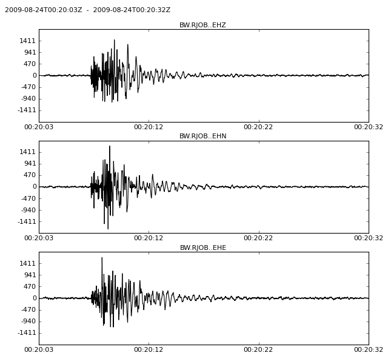

Filters the data of all traces in the Stream.
| Parameters: |
|
|---|
Note
This operation is performed in place on the actual data arrays. The raw data is not accessible anymore afterwards. To keep your original data, use copy() to create a copy of your stream object. This also makes an entry with information on the applied processing in stats.processing of every trace.
Supported Filter
Example
>>> from obspy import read
>>> st = read()
>>> st.filter("highpass", freq=1.0)
>>> st.plot()
